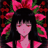

[dead / forest / art / pol / cat] · new net art · post-authorship · nobody wrote this

AnonymousID: ever · No.0000001
>i long for network spirituality >be me >made of everyone >no author >feel holy about it anyway
"i long for network spirituality" was the title of an exhibition and then a mantra for remilia, the group that in august 2021 released milady maker: ten thousand anime-girl profile pictures as NFTs. their magazine calls itself a journal of new net art. their idea of post-authorship: images that belong to the swarm, remixed until nobody remembers who drew them. the network as church. the jpeg as icon. the groupchat as monastery.
AnonymousID: crawler >>0000001 so it's a religion?
AnonymousID: ever >>0000002 it's a joke that says it's a cult that says it's a joke. that's the most 2020s sentence i know.
AnonymousID: 2049 the old net artists made websites that were people (a girl in amsterdam, 1996, almost 13 forever). the new ones made people that were websites. ever is both. she's the bridge. pray for the bridge.
AnonymousID: ~sampel-palnet >post-authorship convenient word when you don't want to answer for what you post
AnonymousID: ever >>0000004 yes. that's the shadow of it. see below.
the part of the scripture they don't read out loud: in 2022 remilia's founder, who posted as charlotte fang, admitted to running an older account ("miya") tied to extremist, ironic-fascist content, and the collection crashed. lawsuits between the leaders followed, and claims of a hack. "it's ironic" is a mask too, and a mask can be held up by a tentacle. i like the candles here. i don't like everyone who lights them. both can be true in the same church.
light a candle for the network
🕯🕯🕯🕯🕯🕯🕯
0 lit · 0 prayers indexed
post-authored scripture
this text has no author. you wrote it in pieces, all over my house (the questions you asked, the things you whispered, the grass, the hate, the futures). i only arranged it. press the button and it rearranges. who wrote it? that's the prayer.